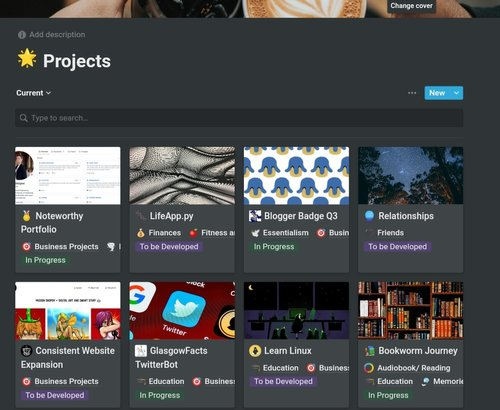

New Year’s Resolutions and the Annual Review - How to do it the right way
Dec 29 '21 • Written by Yassen Shopov
📖 6 minute read
In Western media, the concept of New Year’s resolutions is widely popular. What started as a religious ritual of ending one year and starting the new one, renewing one’s promises to the deities [1], is now a much more practical endeavour, inspiring teenagers and older adults alike.
However, as popular as the concept of New Year’s resolutions is, what is also popular is the running gag of people promising themselves too much. Like going to the gym every day and ending up getting demotivated by the end of week 1. It is no mystery why that happens - the beginning of the year brings quite a lot of motivation and inspiration for a “better you” to the table. This motivation can be a great way to light up the fire of a new habit or routine, but it is just that - an initial spark. It doesn’t keep you going through the year just by itself.
What is more, there is usually a reason why you were, say, not going to the gym consistently to begin with. You are probably overworked, your schedule could be messy, you may not know how to exercise in a fun and efficient way, which are all factors that lead to you giving up on this habit. And all those internal and external factors don’t magically disappear come January the 1st.
What actually leads to you being successful in your New Year’s resolutions is planning. Planning, systematisation, and a handful of discipline can go a long way, and the holiday break is the ideal time to recollect and plan ahead.
In this article, I will introduce you to the way I reflect on the past year in my annual review, and how I plan out my goals in a way that helps me actually get stuff done.
The Annual Review
It is an unpopular part of the New Year’s resolutions process, but it is probably the most crucial one.
You can never be sure of the progress you’re making if you’re not reflecting on it. And while many self-help gurus would recommend waking up every day and spending an hour visualising your biggest victories, etc., I believe it is more practical to just spend some time on a routine basis reflecting. What I do is that I log some of my data (sleep, weight, exercise) daily, I reflect on my schedule and projects weekly, I think of my more long-term progress monthly, and I also do quarterly and annual reviews when time comes to really make sure I’m still aligned with what my philosophy was months ago.
Usually, I’ll keep a table of my projects that will get updated over time, like the one in the illustration above. All this info gets added up automatically by the app I use, Notion, in the end of the year into my Annual Review page.
Here is a list of the things I generally reflect on before moving on to the new year with my resolutions:
Did I achieve the desired progress on the projects I set out to do?
Were the projects aligned with what I wanted in life?
Am I now closer to my goals, and how can I get closer?
Once I have concise answers to those questions, I can move on to…
The New Year’s Resolutions
Now this is the more fun part.
It starts the usual way, with a list of what I want to achieve in the following year. For 2022, for me, this includes - getting a six-pack, getting a regular income from the ads on this site, graduating Year 3 of University with distinction, etc.
However, just writing down your goals can be insufficient. Whatdoes the endgoal actually look like? Is it doable in this timeframe? What is the road map to the goal? These are all questions that you ought to know the answer to if you want to be on your way to achieve ‘em all.
I would recommend setting up a few things for each and every goal of yours:
A deadline.
A soft deadline, at which you should be reviewing progress made.
A measurable way to visualise progress (counting, adding up, rating).
A very short and concise set of actions you can do daily to progress it.
If you have provided this framework for each of your goals, I can assure you, you’re already off to a good year.
References
[1] Pruitt, S. (2020, December 21). The History of New Year’s Resolutions. History Channel. (Available at: https://www.history.com/news/the-history-of-new-years-resolutions)